Angular2
Presentation from an AngularJS (v1) dev
DAVIN Kevin

- Full-stack Dev
- Agile Addict
- Main commiter on AngularJS's libraries
- Angular and other tech Former
Summary
Since NG-Europe 2014 and the announcement of Angular2 , a lots of change have been made...
RIP of AngularJS principle
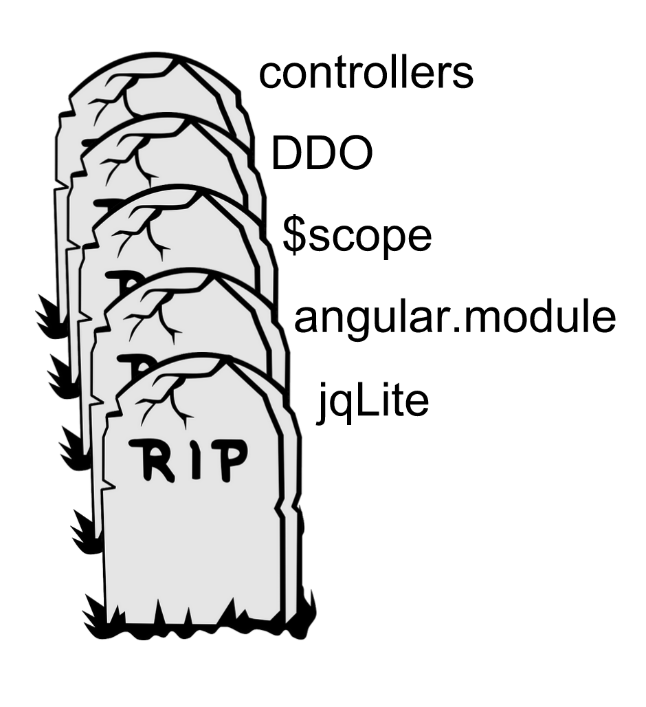Why calling it Angular2 after all ?
The core is still "Angular"
Keep only the good parts of the original Framework
The v2 of Angular is React ?
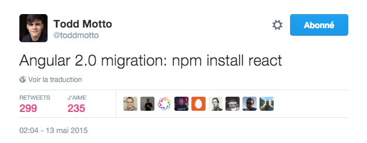A lot of people was discourage by the change
The AngularTeam work hard to improve Migration Path
AtScript...?
An extension of Javascript should have been the reference language
But Google/Microsoft teams-up to improve TypeScript
It's not backward-compatible...
It's True but the AngularTeam have something to help the migration...
Angular1 is dying ?
No It will be supported during two years after the release of Angular2
And your app won't stop working after this...
One framework or many framework ?

AngularJS is a macro-framework with :
- Dependency Injection
- Digest Cycle
- Module Dependency
- Directive for everything...
Angular2 is a m*cro-framework
- DI.js (Angular2 dependency injector)
- Zones.js
- SystemJs
- Native browser API
Dependency Injection
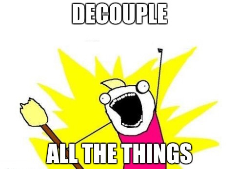Help to conserve SOLID principle in application
In angular1
angular.module('myApp', [])
.constant('Engine', function(){}).
.constant('Tires', function(){}).
.service('Car', Car);
function Car(Engine, Tires){...};
Car.$inject('Engine', 'Tires');- Duplication of "code"
- Singleton for the whole App
- Namespace collision
DI in Angular2
In ES2015
import { Inject } from 'angular2/core';
class Car {
constructor(@Inject(Engine) engine, @Inject(Tires) tires) {}
}In TypeScript
class Car {
constructor(engine: Engine, tires: Tires) {}
}The Injector
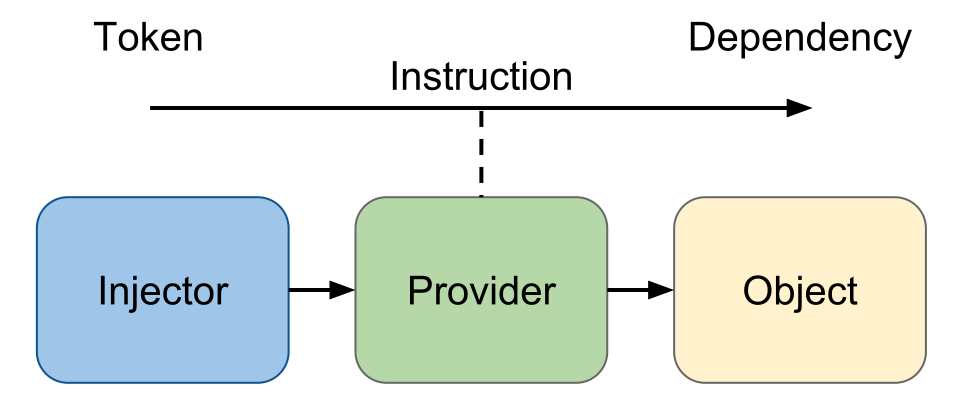So it's just a Map<Token, Provider>
Providing Injectable
import { Injector } from 'angular2/core';
...
let injector = Injector.resolveAndCreate([
Car,
Engine,
Tires
]);
let car = injector.get(Car);import { Injector, provide } from 'angular2/core';
...
let injector = Injector.resolveAndCreate([
provide(Car, {useClass: Car}),
provide(Engine, {useClass: Engine}),
provide(Tires, {useClass: Tires})
]);Multiple sort of injectable
import { Injector, provide } from 'angular2/core';
...
let injector = Injector.resolveAndCreate([
Car, // Class as a Provider
provide(Car, {useClass: Car}), // Full description of Provider, allow aliases
provide(Car, {
useFactory : (engine, tire) => new Car(engine, tire),
deps : ['Engine', 'Tire']
}), // Provide Car from Factory
provide(Tire, {useValue: "Tire"}), // Use Value
SuperEngine,
provide(Engine, {useExisting : SuperEngine }), // Use Alias
]);Injector(s)
Singleton only inside the same injectors
import { Injector } from 'angular2/core';
let injector = Injector.resolveAndCreate([Engine]);
let childInjector = injector.resolveAndCreateChild([Engine]);
injector.get(Engine) === injector.get(Engine);
injector.get(Engine) !== childInjector.get(Engine);Inheritance between Injector
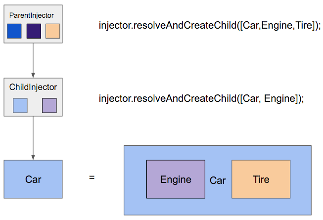Zones.js
Zones are simply an Execution context for Javascript
Zones.js
Zones are simply an Execution context for Javascript
It helps to handle asynchronous code in JS
Extract from Dart Lang, alternative to Domains in NodeJS
Javascript 101
function cf(name) { return function() { console.log(name); } };
var a = cf('a'), b = cf('b'), c = cf('c'), d = cf('d');
a();
setTimeout(b, 0);
setTimeout(c, 0);
d();Results to
a
d
b
cAll the async tasks are added to the event queue and executed when other tasks are finished
How long does it take ?
start();
a();
setTimeout(b, 0);
setTimeout(c, 0);
d();
stop();Results :
// Start
a
d
// Stop
b // Missed
c // MissedWhat need to be done ?
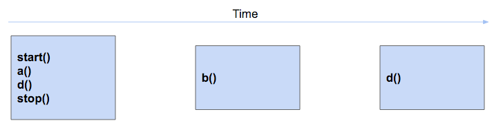What need to be done ?
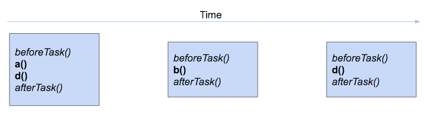Why are we talking about this ?
Let's consider a framework, for example AngularJS with this:
var $rootScope;
zone
.fork({
afterTask : function() {
$rootScope.$digest();
}
})
.run(function() {
angular.bootstrap(document, aModule);
$rootScope = angular
.element(document)
.injector()
.get('$rootScope');
});Demo time
SystemJS
A polifyll for ES2017 (?) module loader
Module dependency done easy
In AngularJS (it's so 2009...)
angular.module('FooModule', [
'BarModule',
'anotherModule'
]);In ES2015 & SystemJS
import { BarModule } from './Bar.comp';
import { AnotherComp } from './another.comp';Simple to maintain !
Is it worth it ?
Angular2 is fully modular
Reduce the size of the app depending of what your app need
Only SystemJS ?
No... you can use what you want

An after jQuery-World

Born in 2006 and help a lot of Web developers...
In AngularJS, we use jQuery Lite
Good fallback to do more in a complicated world
But now, we need to be serious because...
HTML5 API's are just enough !

CSS3 query Selectors
let firstClass = document.querySelector('.some-class');
let allOfClass = document.querySelectorAll('.some-class');CSS class manipulation
let elem = document.querySelector('#some-element');
elem.classList.add('some-class'); // Add class
elem.classList.remove('some-other-class'); // Remove class
elem.classList.toggle('some-other-class') // ...toggle...
elem.classList.contains('some-third-class') // Does it have some class ?Same thing on inline style...
elem.style.color; // Get a CSS attribute
elem.style.color = 'rebeccapurple'; // Set a CSS attribute
elem.style.minHeight; // Get a CSS attribute
elem.style.minHeight = '200px'; // Set a CSS attributeWorking with Event
let elem = document.querySelector('#some-element');
elem.addEventListener('click', () => console.log('clicked'), false);
elem.addEventListener('customEvent', anotherFunction, false);Navigating into the dom
let elem = document.querySelector('#some-element');
let parent = elem.parentNode;
let childs = elem.childNodes;
let specificChild = elem.querySelector('anotherClass');
let specificChilds = elem.querySelectorAll('anotherClass');And about perf ?
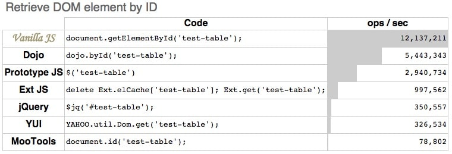Many Languages
Simpler...
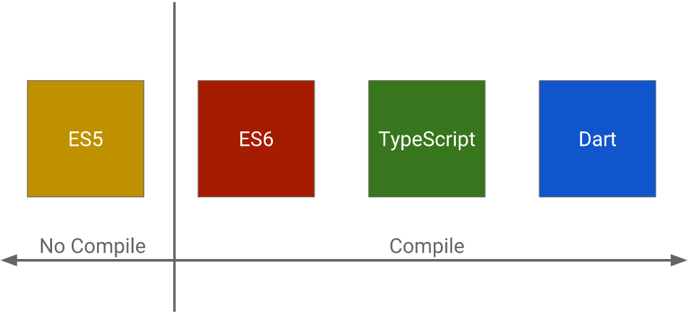Future proof
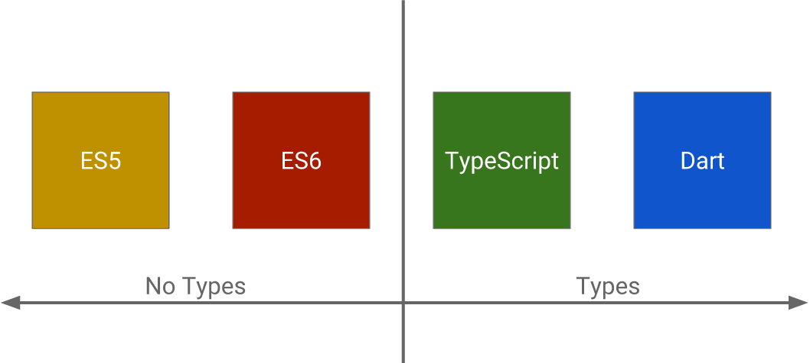Type and IDE help
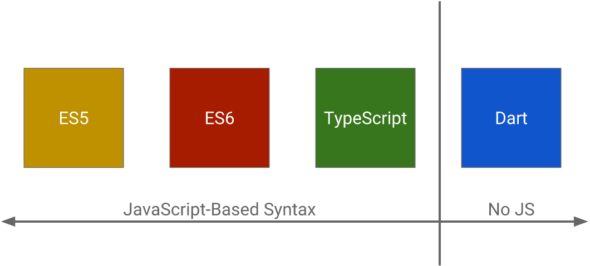JS based, vector of innovation

So you can write Angular2 in Plain Old Javascript
var TodoComp = ng
.Component({
selector: 'todo',
templateUrl: '../partials/todo.html'
})
.Class({
constructor: function (heroService, routeParams) {}
select(todo){...}
});But, it isn't as fun as evolved JS
Or with Type and Decorators !
@Component({
selector: 'todo',
templateUrl: '../partials/todo.html'
})
export class TodoComp {
constructor(
private heroService: HeroService,
private routeParams: RouteParams
){}
select(todo){...}
}Angular2
All is about Component
EVERYWHERE !
An app are just some buildings block

A Component is
Template + Controller (+ optional RouteConfig)
Template
<div>My title is {{ title }}</div>Property Bindings
No more ng-x directives
Instead, we use standard HTML for property binding
<h3 ng-hide="vm.isHidden" ng-class="{active : favoriteHero === hero }" >
Your favorite hero is: {{ vm.favoriteHero }}
</h3>becomes...
<h3 [hidden]="isHidden" [class.active]="favoriteHero === hero" >
Your favorite hero is: {{ favoriteHero }}
</h3>Event Bindings
Really no more ng-x directives
Again, we use standard HTML for event binding
<input ng-click="vm.send(foo)">Click me !</input>becomes...
<input (click)="send($event)">Click me !</input>And the 'magical' two-way binding ?
It disappears, so we have to do it manually
<input [value]="hero.firstName"
(input)="hero.firstName=$event.target.value" >NgModel Directive
The API evolves to introduce a syntax for the two-way binding in latest Alpha
<input [(ngModel)]="hero.firstname">This syntax is a mix between property and event bindings
Structural Directive
All the directive inducing a dom modification outside of the current element are called Structural Directive
- ng-if
- ng-switch
- ng-repeat
The syntax is a kind of special...
<p *ngIf="condition">
condition is true and ngIf is true.
</p><tr *ngFor="#movie of movies">{{movie.name}}</tr>But Why ?
Using HTML Template Element
<template>
<div>A super template !</div>
</template>This template isn't rendered by the browser but can be used
The asterisk (*) effect
<p *ngIf="condition">
A super template !
</p><template [ngIf]="condition">
<p>
A super template !
</p>
</template>So, the * is just a syntaxic sugar
And we can write our own Structural Directive !
Local template variable
We can define a template variable associated to a dom element
<video #player src="foo.mp4"></video>
<button (click)="player.play()"></button>Controller
Still holding all the logic of the component
And compared to Angular1, a component is a tiny "App"
Shell up a Component Declaration
import { Component } from 'angular2/core';
@Component({
selector: 'todo',
template: `<h1>{{ title }}</h1>`
})
export class TodoComp {
public title : String = 'A super presentation !!';
}Using a service in my component
import { Component } from 'angular2/core';
import { MyService } from './myservice';
@Component({
selector: 'todo',
template: `<h1>{{ title }}</h1>`
})
export class TodoComp {
public title : String = 'A super presentation !!';
constructor(private _myService : MyService){} // DI in constructor
}Using a service in my component
import { Component } from 'angular2/core';
import { MyService } from './myservice';
@Component({
selector: 'todo',
template: `<h1>{{ title }}</h1>`,
providers : [ MyService ] // Do you remember the injector part ?
})
export class TodoComp {
public title : String = 'A super presentation !!';
constructor(private _myService : MyService){} // DI in constructor
}And now a sub component...
import { Component } from 'angular2/core';
import { MyService } from './myservice';
@Component({
selector: 'todo',
template: `
<h1>{{ title }}</h1>
<emitter></emitter>
`,
providers : [ MyService ]
})
export class TodoComp {
public title : String = 'A super presentation !!';
constructor(private _myService : MyService){}
}And now a sub component...
import { Component } from 'angular2/core';
import { MyService } from './myservice';
import { EmitterComponent } from "./emitter.component";
@Component({
selector: 'todo',
template: `<h1>{{ title }}</h1> <emitter></emitter>`,
directives : [ EmitterComponent ] // Inclusion of all subComp needed
providers : [ MyService ]
})
export class TodoComp {
public title : String = 'A super presentation !!';
constructor(private _myService : MyService){}
}Why so complicated ?
- Allow Singleton / Multiple service for part of app
- Avoid name conflict in html
- All system handle in same place !
Now, Components have an intuitive LifeCycle
- OnChange - input|output binding value changes
- OnInit - after the 1st OnChange
- DoCheck - dev's custom change detection
- AfterContentInit - after comp content initialized
- AfterContentChecked - after every check of comp content
- AfterViewInit - after comp's view(s) are initialized
- AfterViewChecked - after every check of a comp's view(s)
- OnDestroy - just before destruction
And we can use Interface to declare it
import { Component } from 'angular2/core';
import { MyService } from './myservice';
import { EmitterComponent } from "./emitter.component";
@Component({
selector: 'todo',
template: `<h1>{{ title }}</h1> <emitter></emitter>`,
directives : [ EmitterComponent ] // Inclusion of all subComp needed
providers : [ MyService ]
})
export class TodoComp implements OnInit {
public title : String = 'A super presentation !!';
constructor(private _myService : MyService){}
ngOnInit() { console.log('The Component is initialised'); }
}No more headache with [pre|post]link and compile
Communication
We have now a component, but we want to communicate with other element
How could we do that without any DDO ?
Again, all is in component
Input(s)
import {Component, Input} from 'angular2/core';
@Component({
selector: 'counter'
template: `...`
})
export class CounterCmp {
@Input() counterValue = 0;
}
<counter [counterValue]="10"></counter>Inputs(s) with Alias
import {Component, Input} from 'angular2/core';
@Component({
selector: 'counter'
template: `...`
})
export class CounterCmp {
@Input('start') counterValue = 0;
}
<counter [start]="10"></counter>Output(s) as Events !
import {Component, Input} from 'angular2/core';
@Component({
selector: 'counter'
template: `...`
})
export class CounterCmp {
@Input('start') counterValue = 0;
@Output() onChangeEmitter = new EventEmitter<Event>();
}
<counter [start]="10" (onChangeEmitter)="show($event)"></counter>Output(s) with alias too (of course...)
import {Component, Input} from 'angular2/core';
@Component({
selector: 'counter'
template: `...`
})
export class CounterCmp {
@Input('start') counterValue = 0;
@Output('onChange') onChangeEmitter = new EventEmitter<Event>();
}
<counter [start]="10" (onChange)="show($event)"></counter>Bi-Directional communication
- [Input] as data-binding
- (Output) as event-binding
No more of
<foo bar="val"></foo>
<foo bar="{{ val }}"></foo>
<foo bar="val()"></foo>
<foo bar="val"></foo> <!-- the word 'val', not the value'Beyond the browser...
The JS will live out the window element
A new Era !
The progressive Web-App era
Web-Workers
A way to do 'heavy' calculation in another thread
Service-Worker
After Mobile First, Offline-First
Push notifications, Handle disconnection, synchronisation...
Universal Angular
Also know as Server-Side-Rendering
- Increase performance at first load
- Help for SEO
Angular2 is built upon this principle
import {bootstrap} from 'angular2/platform/browser';
import {AppComponent} from './app.component';
bootstrap(AppComponent);
Migration ?
A migration Path exists
The Angular Team works very hard around a way to transform our AngularJS application in Angular2 App
UpgradeAdapter
A module allowing to Upgrade and Downgrade
elements of Ng1 and Ng2
- Allow new syntax in template
- Synchronize $rootScope.$digest with Zones
- Create a bridge between DI of two systems
Downgrading from ng2 to ng1
import {UpgradeAdapter} from 'angular2/upgrade';
var adapter = new UpgradeAdapter();
var app = angular.module('myApp', []);
adapter.bootstrap(document.body, ['myApp']);app.directive('productDetail',
adapter.downgradeNg2Component(ProductDetail));Upgrading from ng1 to ng2
@Component({
selector: 'product-list',
directives: [
adapter.upgradeNg1Component('productListItem')
],
template: `<h2>Product List</h2>
<product-list-item [product]="product"></product-list-item>`
})
class ProductList {
@Input() products: Product[];
...
}How do we proceed ?
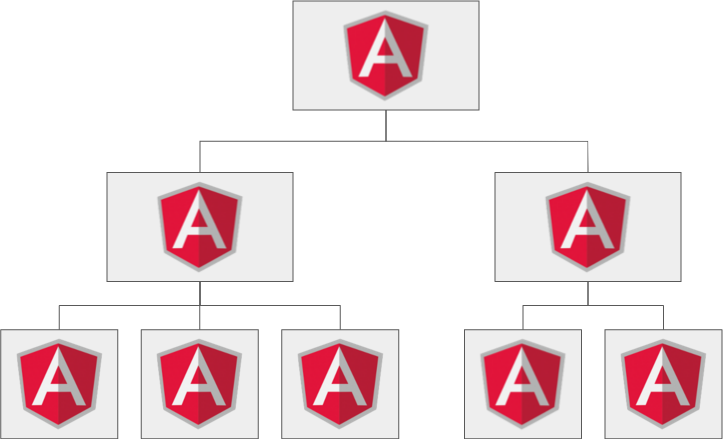How do we proceed ?
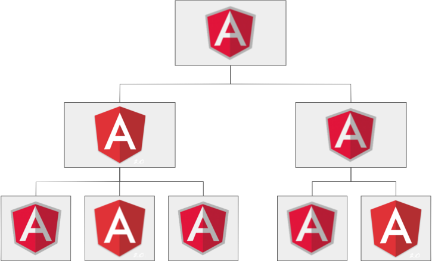How do we proceed ?
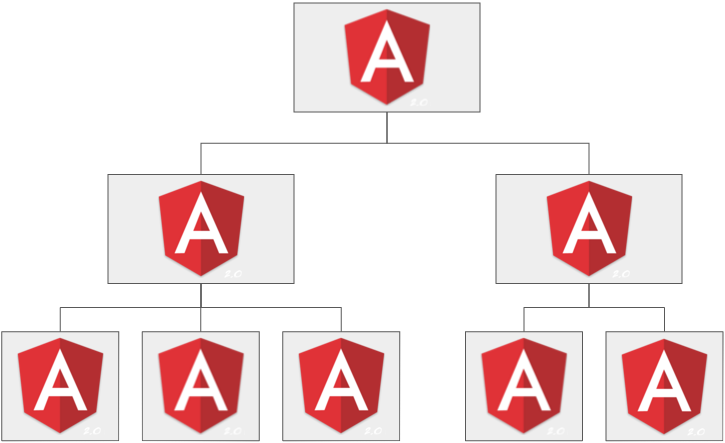My Opinion ?
The most important requirement to do the migration is...
Good coding style in Angular 1.5+ !
And what about a demo ?
If we have the time...
Thank you
Any questions ?